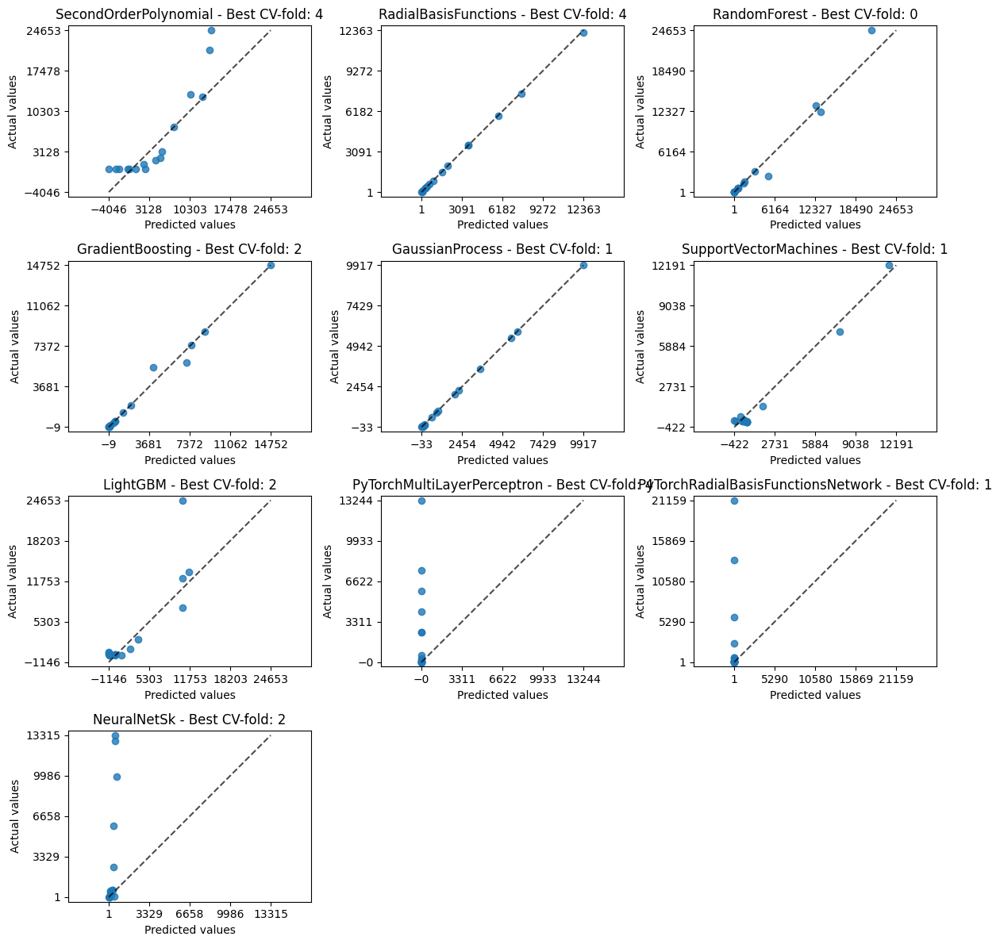
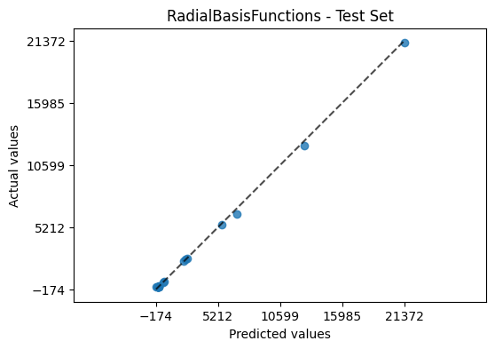

Quickstart#
AutoEmulate’s goal is to make it easy to find a good emulator model for your simulation. Here’s the basic workflow:
import numpy as np
from autoemulate.compare import AutoEmulate
from autoemulate.experimental_design import LatinHypercube
from autoemulate.simulations.projectile import simulate_projectile
/opt/hostedtoolcache/Python/3.11.9/x64/lib/python3.11/site-packages/autoemulate/compare.py:15: TqdmExperimentalWarning: Using `tqdm.autonotebook.tqdm` in notebook mode. Use `tqdm.tqdm` instead to force console mode (e.g. in jupyter console)
from tqdm.autonotebook import tqdm
Experimental design#
Before we build an emulator or surrogate model, we need to get a set of input/output pairs from the simulation. This is called the experimental design and is currently not a key part of AutoEmulate, because this step is tricky to automate. There are lots of sampling techniques, but here we are using Latin Hypercube Sampling.
Below, simulator is a simulation for a projectil motion with drag (see here for details). It takes two inputs, the drag coefficient (on a log scale) and the velocity and outputs the distance the projectile travelled. We sample 100 sets of inputs X using a Latin Hypercube and run the simulator for those inputs to get the outputs y.
# sample from a simulation
lhd = LatinHypercube([(-5., 1.), (0., 1000.)]) # (upper, lower) bounds for each parameter
X = lhd.sample(100)
y = np.array([simulate_projectile(x) for x in X])
X.shape, y.shape
((100, 2), (100,))
Compare emulator models using AutoEmulate#
With a set of inputs / outputs, we can run AutoEmulate in just three lines of code. First, we initialise an AutoEmulate object. Then, we run setup(X, y), providing the simulation inputs and outputs. Lastly, compare() will fit a range of different models to the data and evaluate them using cross-validation, returning the best emulator.
# compare emulator models
ae = AutoEmulate()
ae.setup(X, y)
best_model = ae.compare()
AutoEmulate is set up with the following settings:
| Values | |
|---|---|
| Simulation input shape (X) | (100, 2) |
| Simulation output shape (y) | (100,) |
| # hold-out set samples (test_set_size) | 20 |
| Do hyperparameter search (param_search) | False |
| Type of hyperparameter search (search_type) | random |
| # sampled parameter settings (param_search_iters) | 20 |
| Scale data before fitting (scale) | True |
| Scaler (scaler) | StandardScaler |
| Dimensionality reduction before fitting (reduce_dim) | False |
| Dimensionality reduction method (dim_reducer) | PCA |
| Cross-validation strategy (cross_validator) | KFold |
| # parallel jobs (n_jobs) | 1 |
Printing and plotting#
We can print the average cross-validation results in tabular form:
ae.print_results()
Average cross-validation scores:
| model | short | r2 | rmse | |
|---|---|---|---|---|
| 0 | RadialBasisFunctions | rbf | 0.9873 | 552.7991 |
| 1 | GaussianProcess | gp | 0.9527 | 660.3872 |
| 2 | GradientBoosting | gb | 0.9091 | 1547.9932 |
| 3 | RandomForest | rf | 0.8974 | 1605.6018 |
| 4 | SupportVectorMachines | svm | 0.8794 | 1738.2033 |
| 5 | SecondOrderPolynomial | sop | 0.6176 | 2648.4426 |
| 6 | LightGBM | lgbm | 0.3393 | 3395.5680 |
| 7 | NeuralNetSk | nns | -0.2405 | 4929.8874 |
| 8 | PyTorchRadialBasisFunctionsNetwork | ptrbfn | -0.3149 | 6071.3620 |
| 9 | PyTorchMultiLayerPerceptron | ptmlp | -0.3225 | 5803.3790 |
Or create plots comparing the best fitting cv-folds for each model:
ae.plot_results()

Evaluating the emulator#
Now we can evaluate the best emulator model on the holdout / test set.
ae.evaluate_model(best_model)
| model | short | rmse | r2 | |
|---|---|---|---|---|
| 0 | RadialBasisFunctions | rbf | 156.587 | 0.999 |
And plot the test set predictions.
ae.plot_model(best_model)

Refitting the model on the entire dataset#
Before using the emulator model, we usually want to refit it on the entire dataset. This is done with the refit() method.
best_emulator = ae.refit_model(best_model)
Saving / loading models#
Lastly, we can save and load the best model. Note: there are some checks that the environment in which the model is loaded is similar to the environment in which it was saved. These are based on dependencies specified in a _meta.json file which is saved when the model is saved.
# save & load best model
# ae.save_model(best_emulator, "best_model")
# best_emulator = ae.load_model("best_model")
Lastly, we can use the best model to make predictions for new inputs. Emulator models in AutoEmulate are scikit-learn estimators, so we can use the predict method to make predictions.
# emulate
best_emulator.predict(X[:10])
array([2.46281980e+03, 1.06172285e+02, 8.86520655e+02, 1.70542570e+01,
1.07256198e+01, 5.84738376e+03, 4.36771215e+02, 8.26204887e+01,
8.03468844e-01, 4.23300292e+01])